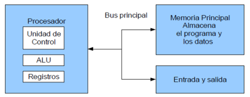
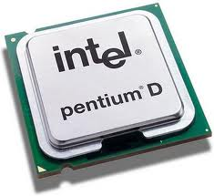
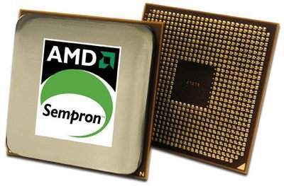
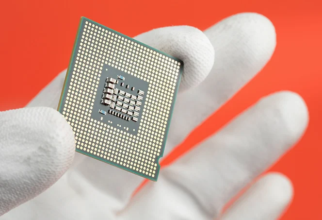
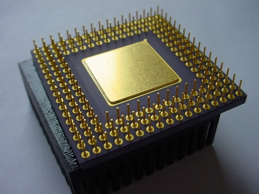
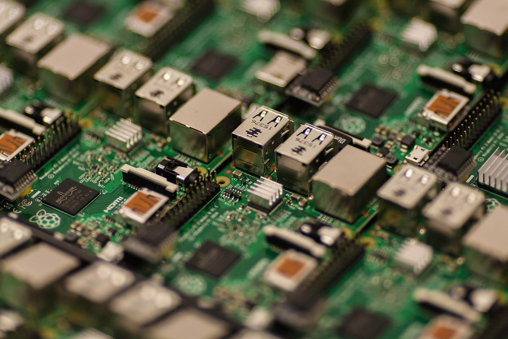
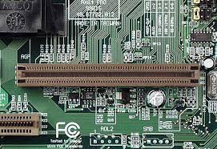
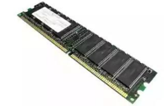
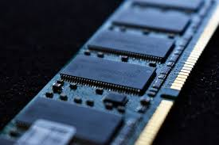
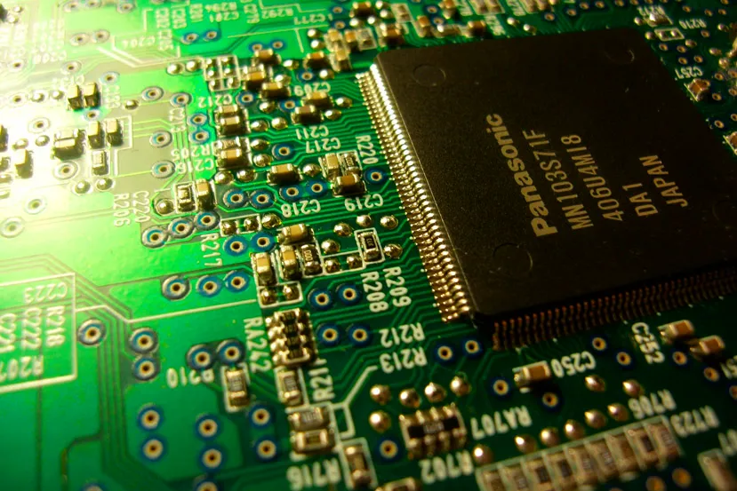

1.1 Modelos de arquitectura de computo
La arquitectura de computadoras es el diseño y la organización de un sistema para un equipo de
cómputo.
Es un
modelo y descripción de cada función, así como los requerimientos y las implementaciones de diseño
para
varias
partes del equipo de cómputo.
1.1.1 Clasicas

Estas arquitecturas se desarrollaron en las primeras computadoras electromecánicas y de tubos de
vacío.
Hay dos arquitecturas distintas relacionadas con el uso y distribución de la memoria: Arquitectura
de
Jonh
Von
Neumman y Arquitectura Harvard.
Arquitectura Von Neumann
La unidad central de proceso (CPU), está conectada a una memoria principal única (casi siempre sólo
RAM)
donde
se guardan las instrucciones del programa y los datos.
A dicha memoria se accede a través de un sistema interconexión de buses único (control, direcciones
y
datos).
En un sistema con arquitectura Von Neumann el tamaño de la unidad de datos o instrucciones está
fijado
por
el
ancho del bus que comunica la memoria con la CPU.
El tener un único bus hace que el microprocesador sea más lento en su respuesta, ya que no puede
buscar
en
memoria una nueva instrucción mientras no finalicen las transferencias de datos de la instrucción
anterior.
Componentes principales de Von Neumann:
- Unidad de Memoria.
- Unidad de Entrada/Salida.
- Unidad de Control.
- Incluidos CPU.
- Unidad Aritmética Lógica.
- Incluida en CPU.
- Registros de Programas.
- Incluidos en CPU.
Las instrucciones provenientes del sistema de entrada, son almacenados por la memoria, procesados
por la
ALU bajo la
dirección de la unidad de control.
Los resultados obtenidos son enviados a la unidad de salida.
En las computadoras de programa almacenado, el programa puede manipularse como si se tratara de
datos.
Este concepto da origen a los compiladores, sistemas operativos y es la base de la gran versatilidad
de
las
computadoras modernas.
Limitaciones del modelo Von Neumann: La longitud de las instrucciones por el bus de datos, que hace
que
el
microprocesador tenga que realizar varios accesos a memoria para buscar instrucciones complejas.
Modelo Harvard
Esta arquitectura utiliza los Micro controladores, tiene la unidad central de proceso (CPU)
conectada a
dos memorias
(una con las instrucciones y otra con los datos) por medio de dos buses diferentes.
Una de las memorias contiene solamente las instrucciones del programa (Memoria de Programa), y la
otra
sólo almacena
datos (Memoria de Datos).
Ambos buses son totalmente independientes lo que permite que la CPU pueda acceder de forma
independiente
y
simultánea a la memoria de datos y a la de instrucciones.
El tamaño de las instrucciones no está relacionado con el de los datos, y por lo tanto puede ser
optimizado para que
cualquier instrucción ocupe una sola posición de memoria de programa, logrando así mayor velocidad y
menor longitud
de programa.
La principal desventaja de esta arquitectura; el bus de datos y direcciones único se convierte en un
cuello de
botella por el cual debe pasar toda la información que se lee de o se escribe a la memoria,
obligando a
que todos
los accesos a esta sean secuenciales.
Limita el grado de paralelismo (acciones que se pueden realizar al mismo tiempo) y por lo tanto, el
desempeño de la
computadora.
1.1.2 Segmentadas
Es una de las tecnologías utilizadas para realizar la segmentación o paralelismo. Divide el
procesador,
en
etapas, procesa una instrucción diferente en cada una y trabaja con varias a la vez.
Pueden trabajar de forma paralela, en diferentes instrucciones, utilizando una cola de instrucciones
para su
comunicación, denominado entubamiento.
La técnica de implementación clave utilizada para hacer CPU.
La dependencia de datos y de control, que tiene como efecto la disminución del rendimiento del
pipelining.
La segmentación de cauce (pipelining) es una forma efectiva de organizar el hardware del CPU para
realizar
más
de una operación al mismo tiempo.
Consiste en descomponer el proceso de ejecución de las instrucciones en fases o etapas que permitan
una
ejecución simultánea.
Las etapas están conectadas, cada una a la siguiente, para formar una especie de cauce las
instrucciones
se
entran por un extremo, son procesadas a través de las etapas y salen por el otro. La productividad
de la
segmentación está determinada por la frecuencia con que una instrucción salga del cauce.
1.1.3 de multiprocesamiento
 Se denomina multiprocesador a un computador que cuenta con dos o más microprocesadores (CPUs).
La arquitectura NUMA, donde cada procesador tiene acceso y control exclusivo a una parte de la
memoria.
La arquitectura SMP, donde todos los procesadores comparten toda la memoria.
Para que un multiprocesador opere correctamente necesita un sistema operativo especialmente diseñado
para
ello.
La arquitectura NUMA, donde cada procesador tiene acceso y control exclusivo a una parte de la
memoria.
La arquitectura SMP, donde todos los procesadores comparten toda la memoria.
Los CPU de multiprocesamiento según Flynn se clasifican de la siguiente manera:
Se denomina multiprocesador a un computador que cuenta con dos o más microprocesadores (CPUs).
La arquitectura NUMA, donde cada procesador tiene acceso y control exclusivo a una parte de la
memoria.
La arquitectura SMP, donde todos los procesadores comparten toda la memoria.
Para que un multiprocesador opere correctamente necesita un sistema operativo especialmente diseñado
para
ello.
La arquitectura NUMA, donde cada procesador tiene acceso y control exclusivo a una parte de la
memoria.
La arquitectura SMP, donde todos los procesadores comparten toda la memoria.
Los CPU de multiprocesamiento según Flynn se clasifican de la siguiente manera:
- SISO : (Single Instruction, Single Operand) computadoras. Monoprocesador
- SIMO : (Single Instruction, Multiple Operand) procesadores vectoriales, Exenciones MMX
- MISO : (Multiple Instruction, Single Operand) No implementado
- MIMO : (Multiple Instruction, Multiple Operand) sistemas SMP, Clusters, GPUs
Los procesadores vectoriales, son computadoras pensadas para aplicar un mismo algoritmo numérico a
una
serie
de
datos matriciales, en especial en la simulación de sistemas físicos complejos, tales como
simuladores de
clima,
explosiones atómicas, reacciones químicas, etc.
Donde los datos son representados como grandes números de datos en forma matricial sobre los que se
deben se
aplicar
el mismo algoritmo numérico.
Los Procesadores Digitales de Señales (DSP), son procesadores especializados en el procesamiento de
señales
tales
como audio, vídeo, radar, sonar, radio, etc. Cuentan con instrucciones tipo vectorial que los hace
muy
aptos
para
dicha aplicación.
SMP
En los sistemas SMP (Simetric Multiprocessing), varios procesadores comparten la misma memoria
principal
y
periféricos de Entrada /Salida, normalmente conectados por un bus común.
Se conocen como simétricos, ya que ningún procesador toma el papel de maestro y los demás de
esclavos,
sino
que
todos tienen derechos similares en cuanto al acceso a la memoria y periféricos y ambos son
administrados
por
el
sistema operativo.
Pueden formarse con varios núcleos en un solo circuito integrado o con varios circuitos integrados
en
una
misma
tarjeta madre.
La primera opción ha sido popularizada al hacerse más económicos los procesadores multinúcleo de los
principales
fabricantes y con su uso en sistemas de gama media y baja, e inclusive en teléfonos celulares y
tabletas.
La segunda opción fue la que se uso en un principio y sigue siendo usada en en estaciones de trabajo
y
en
servidores
de alto rendimiento debido a que incrementa el poder computacional del sistema, pero también
incrementa
considerablemente el costo del sistema.
Clusters
Conjuntos de computadoras independientes conectadas en una red de área local o por un bus de
interconexión y
que
trabajan cooperativamente.
Con un sistema de procesamiento paralelo o distribuido.
Es clave en su funcionamiento contar con un sistema operativo y programas de aplicación capaces de
distribuir el
trabajo entre las computadoras de la red.
Se debe tener cuidado al implementar la aplicación, ya que si los datos que hay que pasar de un
procesador a
otro
son demasiados, el tiempo empleado en pasar información de un nodo a otro puede sobrepasar a la
ganancia
que
se
tiene al dividir el trabajo entre varios procesadores.
1.2 Analisis de los componentes
Los programas cada vez más grandes y complejos demandan mayor velocidad en el procesamiento de
información,
lo
que implica la elección de microprocesadores más rápidos y eficientes.
1.2.1 Arquitecturas
Arquitecturas Cisc
En la arquitectura computacional, CISC es un modelo de arquitectura, en donde los microprocesadores
tienen
un
conjunto instrucciones que caracterizan por ser muy amplio y permitir operaciones complejas entre
operandos,
situados en la memoria o en los registros internos.
Este tipo de arquitectura dificulta el paralelismo entre instrucciones, por lo que, en la

actualidad, la
mayoría
de los sistemas CISC de alto rendimiento implementan un sistema que convierte dichas instrucciones
complejas
en
varias instrucciones simples del tipo RISC, llamadas generalmente microinstrucciones.
Dato importante: Los CISC pertenecen a la primera corriente de construcción de procesadores, antes
del
desarrollo de los RISC.
Ademas Para realizar una sola instrucción un chip CISC requiere de cuatro a diez ciclos de reloj.
Entre las ventajas de CISC destacan las siguientes:
Reduce la dificultad de crear compiladores.
Permite reducir el costo total del sistema.
Reduce los costos de creación de software.
Arquitecturas Risc

Arquitectura computacional, RISC (Reduced Instruction Set Computer) es un tipo de microprocesador
con
las
siguientes características fundamentales:
Instrucciones de tamaño fijo y presentado en un reducido número de formatos.
Sólo las instrucciones de carga y almacenamiento acceden a la memoria de datos.
El objetivo de diseñar máquinas con esta arquitectura es posibilitar la segmentación y el
paralelismo en
la
ejecución
de instrucciones y reducir los accesos a memoria.
Las máquinas RISC protagonizan la tendencia actual de construcción de microprocesadores.
1.2.1.1 Unidad Central de Procesamiento

Se la suele llamar coloquialmente como microprocesador o simplemente procesador, y puedes
considerarla
como
el
cerebro de cualquier dispositivo.
Se encarga de procesar todas las instrucciones del dispositivo, leyendo las órdenes y requisitos del
sistema
operativo, así como las instrucciones de cada uno de los componentes y las aplicaciones.
CPU es la que se encarga de que todo funcione correctamente, y de interpretar todo lo que quiere
hacer
el
sistema operativo o los componentes, estableciendo las conexiones y realizando todos los cálculos
precisos
para
que funcione.
Cuanto más potente sea el procesador, más rápido podrá hacer las operaciones y más rápido funcionará
tu
dispositivo en general.
Los CPUs modernos se pueden clasificar por sus características como:
Tamaño de la Unidad Aritmética Lógica (ALU).
Bus de conexión al exterior (8, 16, 32, 64 bits).
Si su arquitectura tiene cauce (pipeline).
Si son de arquitectura CISC o RISC.
Si son Von Newmann o Harvard.
Si manejan instrucciones enteras o implementan también instrucciones de punto flotante.
No hace mucho tiempo, el procesador era algo totalmente desconocido por los usuarios de PCs.
Esto fue cambiando con el tiempo y en la actualidad cualquier persona al comprar un equipo se
pregunta
acerca de
los atributos elementales de este dispositivo.
Es que el procesador es una parte esencial de la computadora, por eso generalmente se la conoce como
su
“cerebro”.
1.2.1.2 Unidad Aritmetica Logica

Es un circuito logico digital que realiza operaciones aritmeticas y logicas entres los datos de un
circuito:
suma resta, division y multiplicacion, asi como establece comparaciones logicas a traves de los
condicionales
logicos "si", "no", y "o".
Todos los microprocesadores incluyen al menos una ALU, que varia su poder y complejidadsegún su
finalidad
Además, la ALU cuenta con una serie de registros para almacenar los datos y bits de informacion
sobre
los
resultados.
Operaciones a realizar por la ALU:
- Suma aritmetica
- Resta aritmetica
- peraciones lógicas
- Desplazamiento o rotación
- Transferencia
El circuito ALU es solo un operador, no puede tomar decisiones.
Las entradas deben contener tanto la magnitud como el signo que corresponda a la operacion.
La ALU deberá contar con un circuito de control que le permita:
Identificar la operación a realizar
Administrar los recursos internos.
Generar las banderas
1.2.1.3 Registros

Los registros que encuentran dentro de cada procesador su función principales almacenar los valores
de
cada
uno
de los datos,comandos,instrucciones o estados binarios que son los que ordenan qué dato debe
procesarse,
así
como la forma en la que se debe realizar.
Un registro no deja de ser una memoria de velocidad alta y con poca capacidad.
Cada registro puede contener una instrucción, una dirección de almacenamiento o cualquier tipo de
dato.
Cada procesador tiene varias asignaciones o tareas que debe de realizar para el manejo de la
información.
La información es recibida generalmente en código binario, procedente de las aplicaciones para,
después,
procesarlos de una forma determinada.
Tipos de registros
Los registros del procesador se dividen o clasifican atendiendo al propósito que sirven o a las
instrucciones
que les ordenan.
Registros de datos: Guardan valores de datos numéricos, como son los caracteres o pequeñas órdenes.
Los procesadores antiguos tenían un registro especial de datos: el acumulador, el cual era usado
para
operaciones determinadas.
Registros de datos de memoria (MDR): Es un registro que se encuentra en el procesador y que está
conectado
al
bus de datos.
Tiene poca capacidad y una velocidad alta por la que escribe o lee los datos del bus que van
dirigidos a
la
memoria o al puerto E/S, es decir, un periférico.
Registros de direcciones: Guardan direcciones que son usadas para acceder a la memoria principal o
primaria,
que
solemos conocer como ROM o RAM.
En este sentido, podemos ver procesadores con registros que se usan solo para guardar direcciones o
valores
numéricos.
Registros de propósito general (GPRs): Son registros que sirven para almacenar direcciones o datos
generales.
Se trata de una especie de registros mixtos que, como su propio indica, no tienen una función
específica.
Registros de propósito específico (SPRs): En esta ocasión, estamos ante registros que guardan datos
del
estado
del sistema, como puede ser el registro de estado o el instruction pointer.
Registros de estado: Sirven para guardar valores reales cuya función es determinar cuándo una
instrucción
debe
ejecutarse o no.
Registros constantes: Su cometido es guardar valores de sólo lectura como son el 0, 1 ó π.
1.2.1.4 Buses

Un bus se puede definir como una línea de interconexión portadora de información, constituida por
varios
hilos
conductores (en sentido físico) o varios canales (en sentido de la lógica), por cada una de las
cuales
se
transporta un bit de información.
Existen dos tipos primordiales de buses (conexiones) para el envío de la información: bus paralelo o
serial:
Bus paralelo: Es un bus en el cual los datos son enviados por bytes al mismo tiempo, con la ayuda de
varias
líneas que tienen funciones fijas.
La cantidad de datos enviada es bastante grande con una frecuencia moderada y es igual al ancho de
los
datos
por
la frecuencia de funcionamiento.
En los computadores ha sido usado de manera intensiva, desde el bus del procesador, los buses de
discos
duros,
tarjetas de expansión y de vídeo hasta las impresoras.
Bus serie: En este los datos son enviados, bit a bit y se reconstruyen por medio de registros o
rutinas
de
software. Está formado por pocos conductores y su ancho de banda depende de la frecuencia. Es usado
desde
hace
menos de 10 años en buses para discos duros, tarjetas de expansión y para el bus del procesador.
Buses del procesador:
Bus de direcciones: Es unidireccional debido a que la información fluye es una solo sentido, del CPU
a
la
memoria ó a los elementos de entrada y salida.
El CPU puede colocar niveles lógicos en las n líneas de dirección, con la cual se genera 2n posibles
direcciones
diferentes.
Cada una de estas direcciones corresponde a una localidad de la memoria ó dispositivo de E/S.
El procesador envía un código de dirección a la memoria o a otro dispositivo externo.
El tamaño o anchura del bus de direcciones está especificado por el número de hilos conductores o
pines.
Bus de datos: Es bidireccional, pues los datos pueden fluir hacia ó desde el CPU.Las terminales
pueden
ser
entradas ó salidas, según la operación que se este realizando (lectura ó escritura).
En todos los casos, las palabras de datos transmitidas tiene m bits de longitud debido a que el CPU
maneja
palabras de datos de m bits; del número de bits del bus de datos, depende la clasificación del
procesador.
En algunos procesadores, el bus de datos se usa para transmitir otra información además de los
datos.Es
compartido en el tiempo ó multiplexado. Transfieren datos o códigos de instrucción hacia el
procesador o
se
envían hacia el exterior los resultados de las operaciones o cálculos.
Bus de control: Este conjunto de señales se usa para sincronizar las actividades y transacciones con
los
periféricos del sistema.
Algunas de estas señales, como Lectura o Escritura R / W , son señales que el CPU envía para indicar
que
tipo de
operación se espera en ese momento.
1.2.2 Memoria

Es un dispositivo que puede mantenerse en por lo menos dos estados estables por un cierto periodo de
tiempo.
Cada uno de estos estados estables puede utilizarse para representar un bit.
A un dispositivo con la capacidad de almacenar por lo menos un bit se le conoce como celda básica de
memoria.
Un dispositivo de memoria completo se forma con varias celdas básicas y los circuitos asociados para
poder
leer
y escribir dichas celdas básicas, agrupadas como localidades de memoria que permitan almacenar un
grupo
de N
bits.
1.2.2.1 Conceptos basicos del manejo de la
memoria
La gestión de memoria o administración de memoria es el acto de gestionar la memoria de un
dispositivo
informático.
El proceso de asignación de memoria a los programas que la solicitan.
La gestión de la memoria principal de una computadora es una tarea de suma importancia para el
funcionamiento de
la misma.
Los sistemas de memoria virtual separan las direcciones de memoria utilizadas por un proceso de las
direcciones
físicas reales, permitiendo la separación de procesos e incrementando la cantidad efectiva de
memoria de
acceso
aleatorio utilizando la paginación. La calidad de la gestión de la memoria es crucial para las
prestaciones
del
sistema.
La administración de memoria se refiere a los distintos métodos y operaciones que se encargan de
obtener
la
máxima utilidad de la memoria, organizando los procesos y programas que se ejecutan de manera tal
que se
aproveche de la mejor manera posible el espacio disponible.
Las técnicas que existen para la carga de programas en la memoria son: partición fija, que es la
división de
la
memoria libre en varias partes (de igual o distinto tamaño) y la partición dinámica, que son las
particiones
de
la memoria en tamaños que pueden ser variables, según la cantidad de memoria que necesita cada
proceso.
1.2.2.2 Memoria Principal

La memoria del semiconductor utiliza en su arquitectura circuitos integrados basados en
semiconductores
para
almacenar información.
Un chip de memoria de semiconductor puede contener millones de minúsculos transistores o
condensadores.
Existen memorias de semiconductor de ambos tipos: volátiles y no volátiles.
En las computadoras modernas, la memoria principal consiste casi exclusivamente en memoria de
semiconductor
volátil y dinámica, también conocida como memoria dinámica de acceso aleatorio o más comúnmente RAM
(Random
Access Memory).
1.2.2.3 Memoria cache

Es la memoria de acceso rápido de una computadora, que guarda temporalmente las últimas
informaciones
procesadas.
La memoria caché es un búfer especial de memoria que poseen las computadoras, que funciona de manera
similar
a
la memoria principal, pero es de menor tamaño y de acceso más rápido. Es usada por el procesador
para
reducir el
tiempo de acceso a datos ubicados en la memoria principal que se utilizan con más frecuencia.
La caché es una memoria que se sitúa entre la unidad central de procesamiento (CPU) y la memoria de
acceso
aleatorio (RAM) para acelerar el intercambio de datos.
Cuando se accede por primera vez a un dato, se hace una copia en la caché; los accesos siguientes se
realizan a
dicha copia, haciendo que sea menor el tiempo de acceso medio al dato.
Cuando el procesador necesita leer o escribir en una ubicación en memoria principal, primero
verifica si
una
copia de los datos está en la memoria caché; si es así, el procesador de inmediato lee o escribe en
la
memoria
caché, que es mucho más rápido que de la lectura o la escritura a la memoria principal.
La memoria caché cuenta con 3 niveles, cada uno teniendo más caché pero siendo mas lenta, siendo la
de
nivel
3
la más lenta.
1.2.2.4 Modulos de entrada salida
Para poder hacer una operación entre el procesador y un periférico, se necesita conectar estos
dispositivos
a la
computadora y gestionar de manera correcta la transferencia de datos. Esto, se puede realizar
mediante
los
sistemas de módulos de Entrada/Salida. Estos módulos están conectados con el procesador y la memoria
principal,
cada uno controla uno o más dispositivos externos.
1.2.3.2 Entrada/Salida programada
La entrada-salida programada (también entrada / salida programada , E / S programada , PIO ) es un
método de
transmisión de datos , a través de entrada / salida (E / S), entre una unidad central de
procesamiento
(CPU)
y
un dispositivo periférico , como un adaptador de red o un dispositivo de almacenamiento Parallel ATA
(PATA,
anteriormente AT Attachment (ATA)). Cada transferencia de elementos de datos se inicia mediante una
instrucción
en el programa, que involucra a la CPU para cada transacción.
Por el contrario, en las operaciones de acceso directo a memoria (DMA), la CPU no participa en la
transferencia
de datos.
El término puede referirse a E / S mapeadas en memoria (MMIO) o E / S mapeadas en puertos (PMIO).
PMIO se refiere a transferencias que utilizan un espacio de direcciones especial fuera de la memoria
normal,
al
que generalmente se accede con instrucciones dedicadas, comoEN y FUERAen arquitecturas x86.
MMIO [1] se refiere a transferencias a dispositivos de E / S que están mapeados en el espacio de
direcciones
normal disponible para el programa.
PMIO fue muy útil para los primeros microprocesadores con espacios de direcciones pequeños, ya que
los
dispositivos de E / S no consumían el valioso recurso.
Esta técnica pretende evitar que el procesador pare o haga trabajo improductivo, mientras que espera
a
que
el
periférico esté preparado para hacer una nueva operación.
El hardware de la computadora, necesita tener un conjunto de líneas de control del bus del sistema y
de
petición
de interrupción.
Funcionamiento:
El procesador ejecuta instrucciones de un programa. Al finalizar cada instrucción comprueba si se ha
producido
una interrupción.
En caso afirmativo se salva el estado actual del programa (contador del programa y registros) y se
salta
a
ejecutar la rutina de servicio correspondiente.
La rutina de servicio efectúa las operaciones apropiadas en la E/S para realizar la transferencia de
datos
solicitada.
Al finalizar la rutina de servicio se recupera el estado de la CPU y se continúa ejecutando el
programa
que
se
estaba ejecutando antes de la interrupción.
Las interrupciones pueden ser:
ENMASCARABLES (se pueden dejar de atender por software)
NO ENMASCARABLES (siempre atendidas)
Dos formas de conocer la dirección/posición (vector) donde se encuentra la rutina de servicio de la
interrupción
Vector de interrupciones siempre FIJO ó el periférico suministra el vector de interrupción.
1.2.3.4 Acceso directo a memoria
El DMA (acceso directo a la memoria) permite que el dispositivo de red mueva los datos del paquete
directamente
a la memoria del sistema, reduciendo la utilización de la CPU. Sin embargo, la frecuencia y los
intervalos
aleatorios en los cuales los paquetes llegan no permiten que el sistema ingrese un estado de energía
más
bajo.
El coalescentes DMA permite que el NIC recoja los paquetes antes de que inicie un evento DMA. Esto
puede
aumentar la latencia de la red, pero también aumenta las probabilidades de que el sistema consuma
menos
energía.
Los adaptadores y dispositivos de red basados en el controlador Ethernet Intel® I350 (y
controladores
posteriores) Asistencia la fusión de DMA.
Los valores coalescentes más altos de DMA resultan en más energía guardada, pero pueden aumentar la
latencia
de
red de su sistema.
Si habilita la coalescación de DMA, también debe establecer la tasa de moderación de interrupciones
en
"mínimo".
Esto minimiza el impacto de latencia impuesto por la coalescencia de DMA y da como resultado un
mejor
rendimiento de rendimiento de red máximo.
Debe habilitar la coalescencia de DMA en todos los puertos activos del sistema. Usted no puede ganar
ningún
ahorro de energía si se habilita sólo en algunos de los puertos en su sistema. También hay varias
configuraciones de BIOS, plataformas y aplicaciones que afectarán a su potencial ahorro
energético.
1.2.3.5 Canales y procesadores de
entrada/salida
EL canal de E/S es una extensión del bus del 8088. Este canal contiene un bus de datos bidireccinal
de 8
bits,
20 líneas de dirección, 6 niveles de interrupción, líneas de control para las operaciones de lectura
y
escritura
para la memoria y la E/S, líneas de control de 3 canales de DMA, y líneas de control para el tiempo
de
refresco
de memoria.
Los canales de E/S proporcionan una línea Ready para permitir operaciones con dispositivos de
memoria o
de
E/S
lentos.
Cuando la línea no está activada por un dispositivo, el procesador genera ciclos de lectura y
esritura a
memoria
que toman cuatro ciclos de 210 ns (esto es, 840 ns) por byte.
Todos los ciclos de lectura y escritura a E/S generados por el procesador requieren de cinco ciclos
de
210
ns de
reloj (1.05 ms) por byte.
Todas las transferencias DMA requieren de cinco ciclos de reloj para un ciclo de tiempo de 1.05 ms
por
byte.
Los ciclos de reloj se presentan aproximadamente cada 15 m sec y requieren de cinco ciclos de reloj.
Los dispositivos de E/S están direccionados utilizando un mapeo de E/S con el espacio de
direccionamiento.
El
canal proporciona a las tarjetas de E/S 512 direcciones de dispositivos.

1.2.4 Buses
En arquitectura de computadores, el bus es un sistema digital que transfiere datos entre los
componentes
de
una
computadora. Está formado por cables o pistas en un circuito impreso, dispositivos como resistores y
condensadores, además de circuitos integrados.
Un bus es una trayectoria por la cual viajan los datos en una computadora para comunicar los
distintos
dispositivos entre sí.
Los principales buses que se encuentran dentro de una PC son: los Buses del micro-procesador, los
Buses
de
memoria y los Buses del sistema.
1.2.4.1 Tipos de Buses
Existen dos tipos de transferencia en los buses:
- Serie:
El bus solamente es capaz de transferir los datos bit a bit. El bus tiene un único cable que
transmite la
información.
- Paralelo:
El bus permite transferir varios bits simultáneamente, por ejemplo 8 bits.
Aunque en primera instancia parece mucho más eficiente la transferencia en paralelo, esta presenta
inconvenientes:
La frecuencia de reloj en el bus paralelo tiene que ser más reducida.
La longitud de los cables que forman el bus está limitada por las posibles interferencias, el ruido
y los
retardos
en la señal.
Además, los modernos buses serie están formados por varios canales: En este caso se transmite por
varios
buses
serie
simultáneamente.
En los primeros computadores electrónicos, era muy habitual encontrar buses paralelos, quedando los
buses
serie
dedicados para funciones de menor entidad y dispositivos lentos, como el teclado. La tendencia en
los
últimos
años
es reemplazar los buses paralelos por buses serie (que suelen ser multicanal). Estos son más
difíciles de
implementar, pero están dejando velocidades de transferencia más elevadas, además de permitir
longitudes de
cable
mayores.
1.2.4.2 Estructura de los buses
Un bus es un medio compartido de comunicación constituido por un conjunto de líneas (conductores)
que
conecta
las diferentes unidades de un computador. La principal función de
un bus será, pues, servir de soporte para la realización de transferencias de información entre
dichas
unidades.
La unidad que inicia y controla la transferencia se conoce como master del bus para dicha
transferencia,
y
la
unidad sobre la que se realiza la transferencia se conoce como slave. Los papeles de master y slave
son
dinámicos, de manera que una misma unidad puede realizar ambas funciones en transferencias
diferentes.
Por ejemplo, una unidad de DMA hace de slave en la inicialización que realiza el master, la CPU,
para
una
operación de E/S. Sin embargo, cuando comienza la operación, la unidad de DMA juega el papel de
master
frente a
la memoria, que en esta ocasión hace de slave.
Para garantizar el acceso ordenado al bus, existe un sistema de arbitraje, centralizado o
distribuido,
que
establece las prioridades cuando dos o más unidades pretenden acceder al mismo tiempo al bus, es
decir,
garantiza que en cada momento sólo exista un master. Para establecer el tiempo de duración de las
transferencias
y que sea conocido tanto por el master como por el slave, un bus debe disponer de los medios
necesarios
para
la
sincronización master-slave.
1.2.4.3 Jerarquias de buses
Los computadores modernos tienen por lo menos 4 buses diferentes (bus interno, bus del procesador,
bus
del
caché, bus de memoria, bus local de E/S, bus estándar de E/S).
Se les considera una jerarquía, porque cada bus se conecta al nivel superior a él dentro del
computador,
integrando así todas las partes del computador.
Cada uno es generalmente más lento que el que se encuentra sobre él, siendo el bus del procesador el
más
rápido
tratándose de que este es el dispositivo más rápido del computador. Para mejorar el rendimiento del
bus,
las
jerarquías de buses fueron implementadas cada vez más.
1.2.5 Interrupciones
Una interrupción consiste en un mecanismo que le permite al hardware la invocación de una rutina
fuera
del
control del programa que está siendo ejecutado. Es una señal recibida por el procesador de una
computadora,
que
indica que debe «interrumpir» el curso de ejecución actual y pasar a ejecutar código específico para
tratar
esta
situación.
Una interrupción es una suspensión temporal de la ejecución de un proceso, para pasar a ejecutar una
subrutina
de servicio de interrupción, la cual, por lo general, no forma parte del programa, sino que
pertenece al
sistema
operativo o al BIOS. Una vez finalizada dicha subrutina, se reanuda la ejecución del programa.
Las interrupciones son generadas por los dispositivos periféricos habilitando una señal del CPU
(llamada
IRQ
del
inglés "interrupt request") para solicitar atención del mismo.
Por ejemplo. cuando un disco duro completa una lectura solicita atención al igual que cada vez que
se
presiona
una tecla o se mueve el ratón.
La primera técnica que se empleó para esto fue el polling, que consistía en que el propio procesador
se
encargara de sondear los dispositivos periféricos cada cierto tiempo para averiguar si tenía
pendiente
alguna
comunicación para él. Este método presentaba el inconveniente de ser muy ineficiente, ya que el
procesador
consumía constantemente tiempo y recursos en realizar estas instrucciones de sondeo.